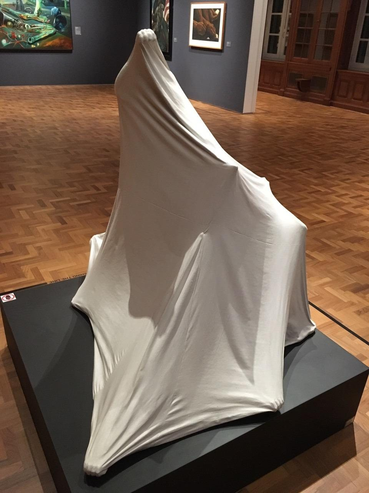
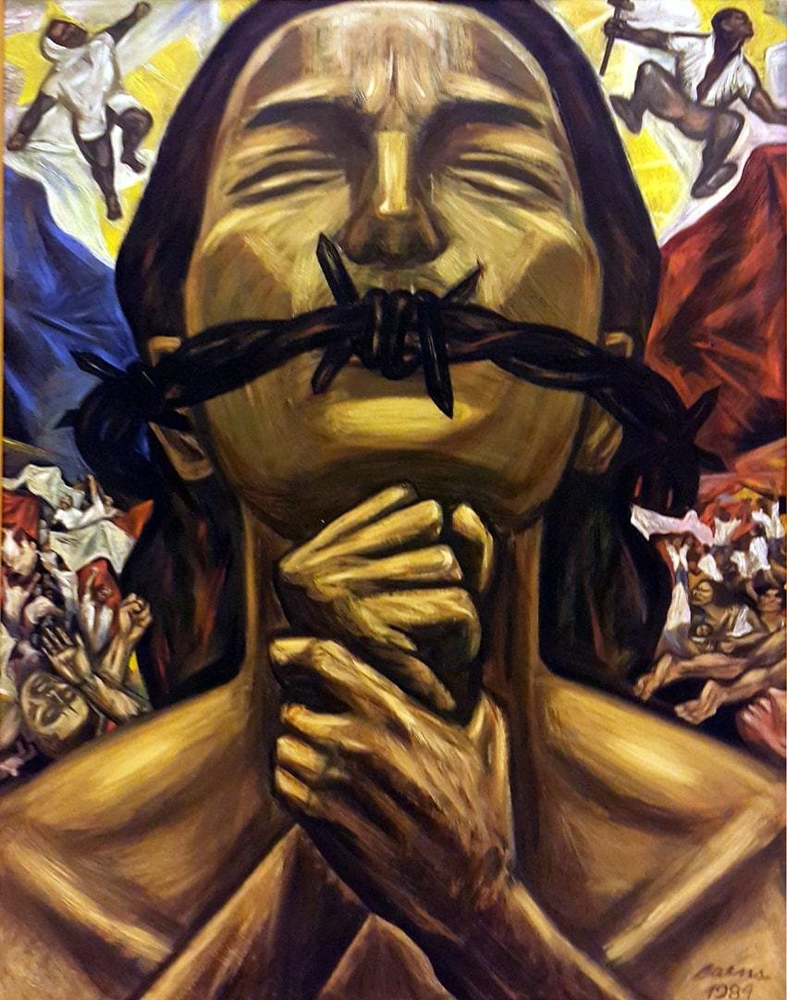
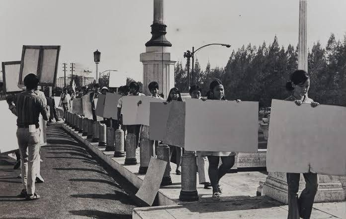

Sandali lang po
Binubuksan ang eksibit
Huwag kalimutan
Group 3 · Art Program
Nine works on display
An exhibit on the oppression, injustice and suffering of Martial Law, told through nine Philippine works of protest. Walk the hallway and leave a sticky note on any work that stays with you.
November 24, 2026
9 works · Drag or swipe, click a card to read more
Featured · Work 01 of 09
A tall, hooded figure of white canvas stretched over a wooden frame. The fabric is pulled tight and creased, with no face or features, and the figure stands on a black base. The title joins kinuha (taken) and sinupot (bagged).
Power that hides its victims. The work refers to the desaparecidos, the missing persons, and to the restraint felt during a period of media censorship. The blank, shrouded figure makes visible what the regime erased.


Featured · Work 02 of 09
The Philippine motherland, with barbed wire around her mouth like a gag. Her fists are clenched, the colors of the flag fill the background, and outraged figures crowd the scene.
The gag is censorship made visible. Placing a woman in the place of Christ, with barbed wire in place of thorns, is our reading of the title: the nation as a silenced woman who still resists, a suffering figure and not only a victim.
Featured · Work 03 of 09
Edited archival images of protests in Manila, from the 1970s leading up to and during martial law. The slogans have been digitally wiped from the placards, leaving them blank: forgotten voices, beliefs and messages that were silenced or overlooked.
Two ways to read an empty placard. It can mean forgetting that the period ever happened, or it can be an impulse to remember. The empty spaces stand for the silenced voices of that time and the historical amnesia that has marked Philippine politics since.

What they share
All of them depict abuses of power and institutions in the Martial Law era, and the toll on Filipinos through repression, silencing and abuse by state forces. They are Philippine works of protest that also give a voice to victims who never got to speak.
Why these works
They capture a side of Martial Law that is often overlooked and forgotten, each voicing a different kind of pain. Together they let us reflect through three lenses: the past, the present and the future, so we do not turn a blind eye to injustice.
What we learn
The works reveal the fear, oppression and restrictions Filipinos lived under. They also show that art can express what could not always be said aloud, at a time when artists faced censorship and persecution for challenging the realities around them.
The hallway is right here on the page. Click anywhere on an artwork to stick a note beside what you see, then write your thoughts. Every note is shared, so everyone who visits sees what you leave.
01 · Look
Take in each work.
02 · Click
Pick a spot on the artwork.
03 · Stick
Write it and stick it on.